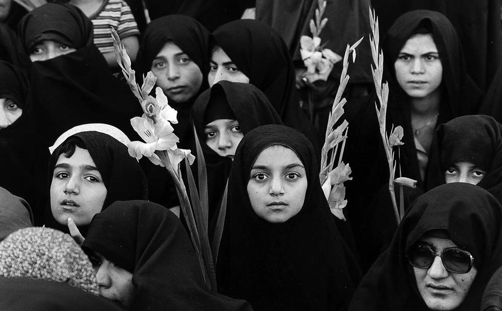

Iran has banned women from watching professional football matches since 1981, after the 1979 Islamic Revolution. The Islamic law that men and women should not be together in public is applied, and it is a justification that male fans should be protected from obscene acts, but it was actually a discriminatory custom for women. Since then, as calls for eliminating discrimination against women grew, female spectators were allowed to enter in August, 41 years later. However, you have to sit and watch in a women-only area without choosing the seat you want. Under the Taliban, women were deprived of even basic educational opportunities. Girls are not given any education after the age of eight, and girls under the age of 16 are allowed to marry. In this country, 80% of marriages are forced. Women must accompany their male relatives when they go outside, and taxis or buses cannot be used alone.
In response to a recent report by the Christian Science Monitor that European women are voluntarily converting to Islam, Muslim missionaries pointed out the reality of human rights problems faced by Muslim women, saying, "It is a strange phenomenon caused by not knowing Islamic doctrines properly." he Christian Science Monitor recently reported that thousands of European women have converted to Islam every year since the September 11 attacks, and they decide to convert mainly because of their interest in Islamic doctrine itself. The newspaper analyzed that this phenomenon is aimed at achieving mental stability along with disappointment in the secularized European society. Pastor Lee Man-seok, who served in Iran, a Muslim country for 19 years, said, "Women with religious curio sity and passion may have been touched by Muslim women wearing Chador or attracted only by the beautiful appearance of Islam," adding, "If Islamic doctrines and prominent Muslim scholars know how to see women, they will think differently." "Women in the Middle East have begun to feel the seriousness of their situation as education improves and the Internet and broadcasting influence," said Kim Do-heun, general secretary of the Middle East Mission (Middle East Church, 2007). "Women outside the Islamic world need to take a closer look at the causes of the changes."
Ordinary Muslim clerics and Muslims insist that Chadur be worn to protect women from the culture of the division. But Islamic scholars argue that the Chadur is to protect the purity of men who see women. Some scholars view women's hands, faces, and even women themselves as attracting men. Scholars such as Malikiyah and Hanafiyah oppose women's makeup, warning that "a naturally beautiful woman without makeup can be seduced by men just by looking at her face." Another scholar sees the woman herself as an aura (Aurah, the external genitals of women) and argues that the devil welcomes her when she comes out of the house. In other words, women have to stay indoors or wear chador when they go out to avoid seducing men. Pakistan's Isar Ahmad, known for the movement "Let's Go Back to Quran," saw the origin of "Chardiwar," which means four walls, and insisted that women should always be trapped in four walls. There is also an opinion that Chadur should be trapped inside the tent even when going out because it means "tenture" in Persian.
Quran 4:3 restricts having up to four wives, but does not restrict marriage to slave women who are
treated as possessions. The esteemed Muslim scholar Ghazali reports,
"Omar's son takes three slave girls before his last meal, and Ali, the most ascetic of his
colleagues, has four wives and 17 slave girls as concubines."
In addition, the Koran explains that the reason for having four wives is to solve gender imbalance
and social problems caused by wars or accidents. However, Muhammad married
as many as 22 wives, and at the time of his death, he had nine wives. Muhammad's third wife, Aisha,
married Muhammad, who was 53 when she was only nine years old.
In Islam, those who sacrificed their wealth and lives for Allah and Prophet Muhammad say that if
they go to the underworld, they can live with 72 beautiful women with big eyes.
Two of them say they can take the best wife on earth, and all the beauties soon return to their
maiden state.
In addition, if a virgin is executed for a crime, she cannot go to heaven by her husband, so a
person with good Islamic faith takes away her virginity. In Iran, this is still
done by the customary law called tajavoz.

Islamic law allows people to go on a long business trip or temporarily marry at any time with a down
payment if necessary. As a result, women who are pregnant by contractual
marriage are becoming a social problem in Islamic countries. This is because at the end of the
contract period, they are not responsible for any problems that have occurred.
Women who know they are pregnant after the contract is over and children who will be born in the
future have no one to blame.
When Muslims marry, they pay money or goods to a bride or family, which is called a wedding dowry.
Marriage funds are exchanged in exchange for benefits from women, also called
remuneration, and marriages without this marriage fund are invalid. These acts are legally
recognized by any denomination.
Quran 2:282 states that if there is a shortage of one male in a case that requires two male witnesses, there should be two women. In terms of property inheritance, women can only receive half of men (Quran 4:11).
The foundations of Islamic Law are based on the Qur’an. In addition, the Sunnah (the hadith and the
example of the prophet) is used as a secondary source for further clarification
and guidance. When the Qur’an and Sunnah leave an issue unresolved, Muslim scholars resort to
ijtihad – the science of interpretations and rule making, where they can supplement
Islamic Law with local customs. Naturally, scholars from different communities and schools of
thought disagree in their ijtihad, which is unobjectionable as long as these
scholarships are based on religious and linguistic knowledge and are conducted piously and in good
faith. While Muslims are free to choose the interpretations most convincing
to them, it is inevitable that these individual ijtihads are influenced by the patriarchal customs
and beliefs of their surroundings.1
It is therefore evident that Muslim jurists are a product of their societies, where the central
patriarchal concept that men are superior to women influenced understanding
of Qur’anic texts. As such, these ijtihads are a product of their times and patriarchal
circumstances, and need to be addressed and re-evaluated. In the words of Dr. Asma Lambrabet,
a leading figure in revising Islamic texts from feminist perspectives; “Islamic thought should
evolve in order to redefine and rethink itself, and to make the necessary
distinction between the spiritual message and certain interpretations that have frozen the text,
occasionally suffocating its true message.”
As many Islamic scholars point out, the Qur’an clearly instates the principle of equality among all
humans. In the Qur’an (Qur’an 49:13, among other verses), God created
humans from male and female, and despite the empirical differences among humans (based on race,
gender, etc.), the Qur’an regards them as equals and only ranks humans based
on their moral choices and piety. God created men and women from the same soul, as guardians of each
other in a relationship of cooperation not domination.4
However, while some specific verses at face value seems to be promoting male dominance, alternative
interpretations are important to consider. For example, one the most
controversial and most commonly cited Qur’anic verse to justify male dominance is the 34th ayah in
surat al-Nisa’, which is most commonly interpreted as “men are the
protectors and maintainers” (original: qawwamun, other possible interpretations: advisors, providers
of guidance) “of women,” “because” (original: bima, other possible
interpretations: in circumstances where) “they are superior to them” (original: faddala, other
possible interpretations: have a feature that the other lacks) “and because”
(original: bima, other possible interpretations: in circumstances where) “they support them from
their means.”5
The popular interpretation understood in light of patriarchal hierarchal traditions, as al-Hibri
demonstrates, can be completely different once patriarchal assumptions
are eliminated. In this case, the Qur’an was describing a specific situation observed at that time,
where a man takes the responsibility of an advisory role if both these
conditions are present; first if the man has an ability that a particular woman lacks, and second
when the man is maintaining that particular woman, meanwhile the woman is
free to reject the advice. Based on the rules of Islamic jurisprudence, when one verse is specific
to certain circumstances, the more general principle of equality (outlined above)
is to be taken as the general rule while the particular instance as the exception.6
It is important to note herein that this is only one example and there are numerous other cases
where the dominant patriarchal interpretations are disputed by feminist Islamic
jurisprudence scholars. While family law and personal status codes in Arab and Muslim countries
restrict women’s rights and freedoms (e.g., in choosing a husband, guardianship/
wali, obeying the husband/ ta’ah, initiating divorce, dowry requirement, polygamy, marriage to
non-Muslims, etc.), alternative interpretations of the Qur’an dispute these claims
of male domination based on religious texts (see al-Hibri7).
The mainstream interpretations of Qur’anic text that consider men superior to women are therefore
not objective but subjective human interpretations heavily influenced
by historic and geopolitical conditions. In addition, Qur’anic verses in many instances are revealed
in very specific circumstances, and need to be understood based on
contextual terms.
For example, surat al-Baqara 282, is another of the commonly cited verses to claim male superiority
in Islam. The verse, revealed in a business context, states that
“when you enter a transaction involving a debt for a fixed period reduce it to writing and let a
scribe write it down between you in fairness … and bring two witnesses from
among your men. Should there not be two men, then a man and two women of the women you choose to be
witnesses.” If taken out of context, this verse could be interpreted to suggest
that a woman’s testimony is not equal to that of a man’s. However, considering the specific
situation of a business transaction and the larger context in which women at the time
were not involved or experts in business affairs, this verse should not be taken as evidence that
women are not equal to men in Islam. In fact, in another instance, the second
successor to the Prophet, Umar ibin Khattab, appointed a woman to manage the affairs of a market in
Medina.8
Therefore, verses of the Qur’an need to be taken in the contexts in which they were revealed, as the
Qur’an takes the specific circumstances of the societal conditions into
consideration.9 These specific verses are products of their times and contexts, and need not be
forced onto different times and different contexts. Moreover, the Qur’anic verses
need to be looked at in a wholesome manner and not taken in isolation from other texts and verses.
In fact, the five main schools of thought in Islamic jurisprudence
(Hanafi, Maliki, Shafi’i, Hanbali, and Ja’fari), formally adopted by Muslim countries, agree on four
basic principles of Islamic law; it changes with time and place, must serve
the public interest, should not cause harm, and may be discarded if its cause has faded.10 This is
clear evidence that some verses which were revealed in specific circumstances
should not be taken out of context and generalized as the rule for all times and places.
According to Dr. al-Hibri, the Islamic philosophy of change embraces gradual change, and is linked
to the principle of shura where societal affairs are conducted in consultation.
The Islamic philosophy of change is also linked to the important Qur’anic principle of no compulsion
in the matters of faith. Gradualism, shura, and aversion to coercion are
important Islamic principles that are most appropriate to advance the rights of Muslim women.
Gradual stable change to the status and rights of Muslim women is therefore
achievable through Islam. Two of the agreed upon principles of Islamic law: rationality (‘illah;
when a reason for a law disappears, so must the law) and public interest
(maslahah; Islamic laws must serve the public interests, including those of women) are important
foundations for revising patriarchal laws and re-engaging in ijtihad.11 As such,
Muslim women’s rights can be attained through these Islamic jurisprudential principles and
requirements.
As al-Hibri points out, Muslims women tend to be religious, and would not react well to a western feminist perspective that is imposed upon them, therefore secular approaches to women’s rights are not likely to ‘liberate’ Muslim women because people of faith will continue to want to follow their perception of the Divine Will.12 In addition, many scholars argue that there is no universal model of gender quality (‘one size fits all’), and the West should not keep a monopoly on the topographies of modernity and truth.13 In this context, liberation and change must come from within the Islamic sphere, where Muslim women have a proactive and autonomous role in reform, re-reading of the Qur’an, and revealing the historical prejudices that colored the understanding of the Qur’anic message. In an environment of religious devotion, liberation must be rooted in the roots of the Qur’an.